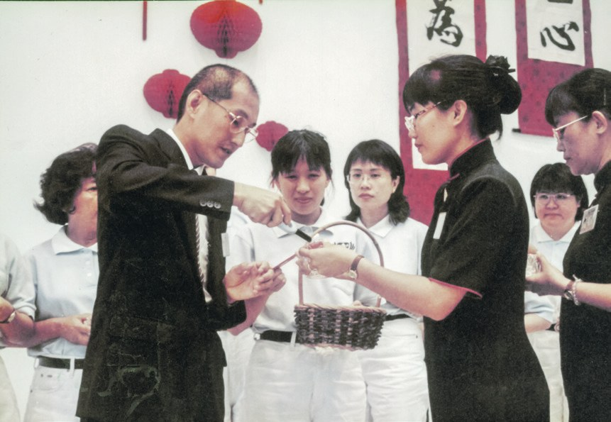
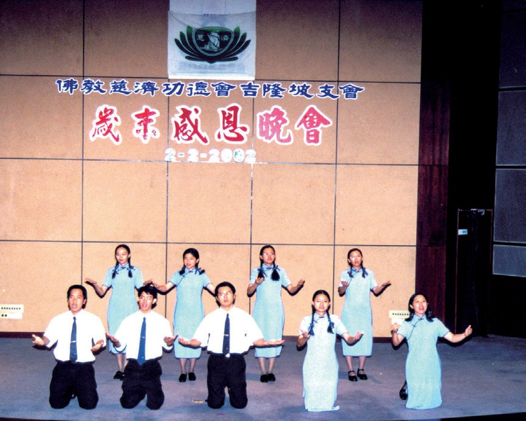
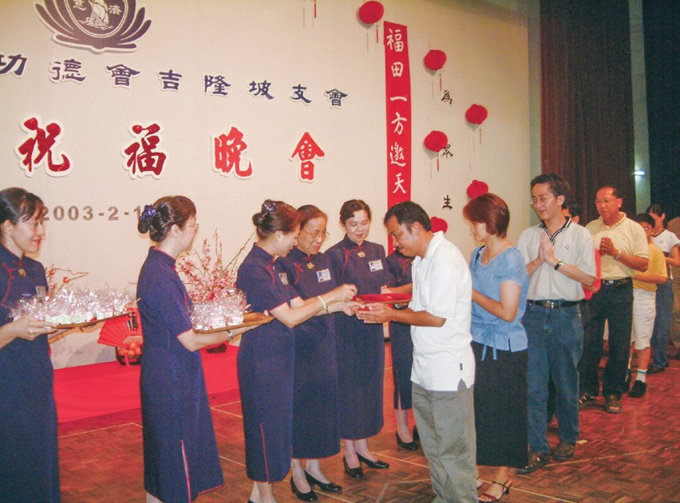
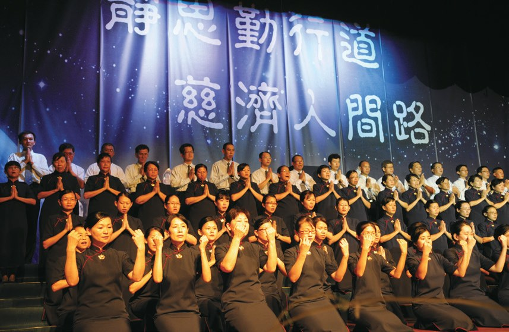
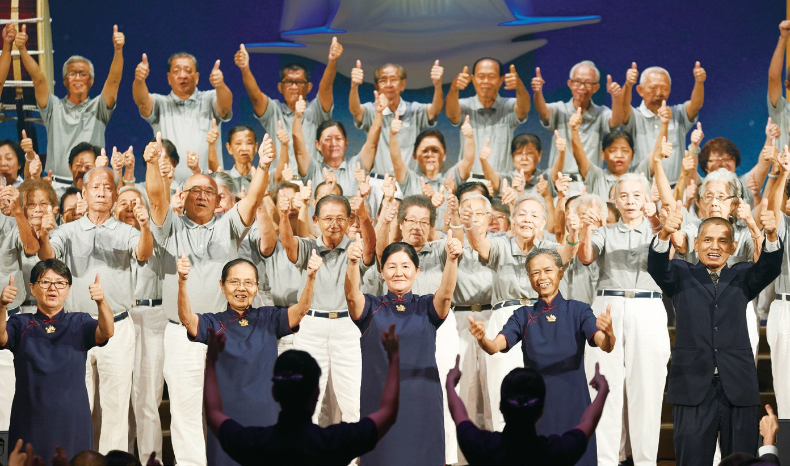
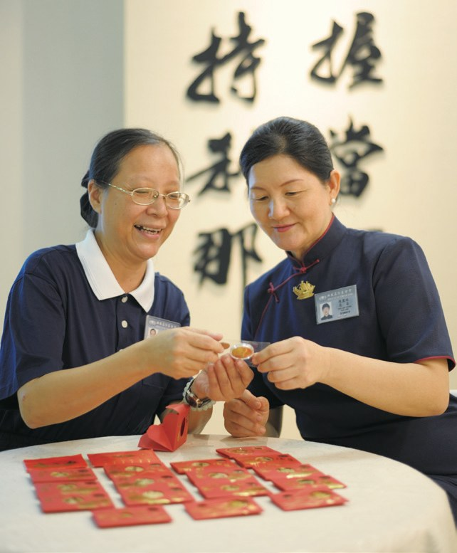
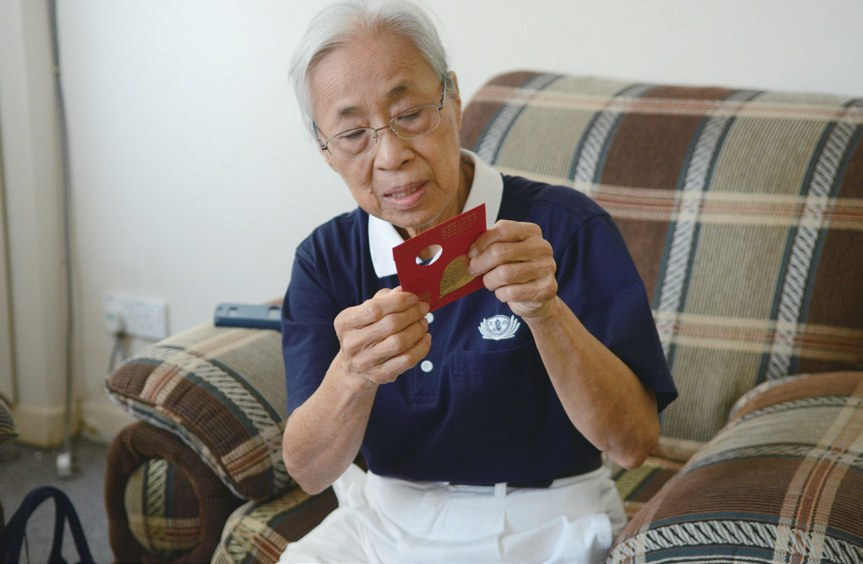
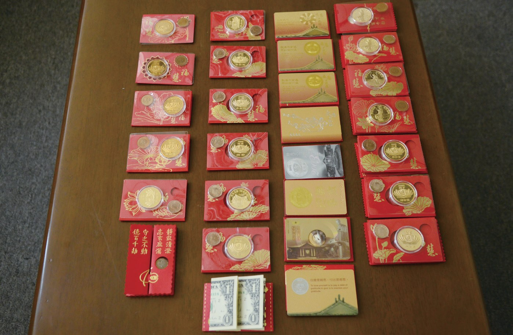

戒慎虔誠
福慧雙修
一個紅包，能裝下什麼祝福？

先別急著下結論，讀完再說說你的想法～
這一篇講歲末祝福：慈濟人一年一度的大團圓。從六百多位志工在佛寺相聚，到一萬多人「回家」。
你會讀到臺上的志工分享、上千人的經藏演繹，還有一個個親手黏上稻穗的福慧紅包。
下面是原書的節錄，紅色底線是我們替你標出的轉折點。
讀之前：你覺得年終聚會，最重要的是什麼？
從佛寺開始
1969年，臺灣的第一次冬令發放後，大家分享感想。閱讀引導
證嚴上人勉勵會眾要感恩過去一年的平安，歡喜迎接新的一年。
1996年1月21日，六百餘位來自全馬各據點的志工，於吉隆坡十五碑錫蘭佛寺首辦「馬來西亞慈濟歲末聯歡會」，歡慶一年一度的大團圓日。
一年團圓一次！

2001年2月3日，雪隆慈濟為400位環保志工舉辦「新春感恩晚會」，感念志工長期辛勤投入環保

就近於社區場地舉辦歲末感恩晚會。
輪椅上的志工
讓會員知道，善款用到了哪裡。閱讀引導

讓會眾知道捐獻的善款，慈濟都有好好的運用，也鼓勵大眾一同來付出。
雪隆慈濟響應呼籲，於2004年新春祝福晚會時，向會眾宣導心素食儀運動。同年，歲末聯歡活動也正式定名為「歲末祝福」。
儘管他身有病痛，需長期依靠輪椅移動，仍把握分秒做環保，辦活動

也把握每一分鐘。
此後每年歲末祝福都會安排志工分享
住在蕉賴的黃寶發，雖然固定捐獻善款，但因忙於事業而未能好好瞭解慈濟；直到參加歲末祝福，看到慈濟援助天下苦難人的回顧影片，
「我覺得人生有很多變化，很多人因為無常來臨就不見了……還有很多人需要我們去幫忙，所以我要盡力去付出。」
黃寶發說・p.524
就決定來付出？
上千人一起演
用手語和戲劇，把經文演出來。閱讀引導
128位新受證慈濟委員透過經藏演繹，傳達對天地災難及人心不調的擔憂
2010年，巴生慈濟的歲末祝福也加入《無量義經》經藏演繹；88位志工歷經兩個月的密集訓練，以身說法入經藏。

只為一場演出。

- 近3,000位志工參與經藏演繹p.525
- 17,000名觀眾以心會法p.525
388位慈濟志工組成的演繹團隊，娓娓道出馬來西亞慈濟二十年的甘苦法喜。
馬來西亞慈濟人從1993年到2013年勤奮耕耘的善緣都一一展現。
長達兩個多月的積極籌備，動員兩千多位慈濟志工的協助
在自己的「家」
以前每次都要租場地、搬工具。閱讀引導
歲末祝福參與人數從三百多人提升到一萬多人。
活動前志工必須花費數日時間，搬運大量佈置工具往返會場和倉庫
直到吉隆坡甲洞慈濟靜思堂於2014年5月完工，才得以在自己的「家」舉行歲末祝福。
2014年年末，雪隆慈濟於吉隆坡靜思堂舉辦十一場歲末祝福，共吸引一萬三千四百多名會眾「回家」，共襄盛舉。

回家辦了！

一群六十至八十歲的環保志工上臺呈現〈人人做環保〉手語
全球有時差，但師徒的心無秒差
2021年2月，全球五十七個國家地區，超過三萬多條線上的靜思弟子心連心、念傳念，首度同步與上人連線

同一時間連線！
「……而今年因為疫情，只能在空中以法相會。然而，唯一不變的是見師歡喜，聆聽上人開示更法喜。……」
志工陳順福說・p.529一株六顆的稻穗
上人把版稅化作紅包，送給大家。閱讀引導
猜一猜閱讀引導
早期南馬歲末聯歡會的福慧紅包，裡面有六枚20仙硬幣，象徵什麼？

學習稻穗越飽滿越低垂的精神，放下身段，縮小自己
黏上一株六顆的稻穗，估計需要四、五公斤的稻穗量，幸好有來自雪蘭莪適耕莊慈濟會員善心結緣。
照顧戶海倫得悉後，以自家稻穗跟慈濟結緣，表達對慈濟人的感恩。
送稻穗了！
以往馬來西亞慈濟的福慧紅包都是由臺灣製作，再寄送到當地。

「剛開始不會黏紀念幣，沒有放正就用膠水貼上去，看看不對，趕緊叫大家務必要將紀念幣放在紅包已切好的位置上，要整齊、端正，要讓會眾一拿起紅包，就有歡喜心。」
陳惠蘭說・p.532「上人的愛要恭恭敬敬送出去，不能馬馬虎虎。」
陳惠蘭表示・p.532都要檢查。
也會再次叮寧每個做紅包的志工，不要浪費每一粒稻子。
「當時紅包裡有兩張一元美鈔，我以為這只是上人給弟子的壓歲錢，完全不清楚福慧紅包的來源和意義……」
陳惠蘭回憶・p.533
從進入慈濟到現在，陳惠蘭共收藏了20個福慧紅包
既是發好願，同時也要懺悔過去，展望未來
停一停：誰讓你記住了？閱讀引導
選一位你印象最深的人。沒有標準答案。
有人坐輪椅也做環保，有人看了影片就加入，有人用自家稻穗結緣，有人細心檢查每個紅包。哪一位讓你最有感覺？

一起回頭看看吧～
回望
依本章原文整理，每一條都標了原書頁碼。閱讀引導
背後原因
為什麼要有自己的家

小川租場地也能辦，為什麼一定要在靜思堂？
- 人越來越多
參與人數從三百多人提升到一萬多人。p.526
- 租場地辛苦
志工要花費數日搬運佈置工具。p.527
- 回家
靜思堂完工，在自己的「家」舉行。p.527
後續發展
歲末祝福一路走來

小禾從佛寺的聯歡會到全球連線，經過了多少年？
- 1996.1.21
錫蘭佛寺首辦歲末聯歡會。p.521
- 2004
正式定名「歲末祝福」。p.523
- 2007
開始安排志工上臺分享。p.523
- 2009
首度演繹《法譬如水》。p.524
- 2014
首次在吉隆坡靜思堂舉辦。p.527
- 2021.2
全球五十七國同步線上連線。p.528
歲末祝福的轉變
以前和後來
小川歲末祝福這些年，有什麼不同？
- 僅限慈濟志工會員、一般民眾也能參與p.534
- 向外租借場地在自己的「家」舉行p.527
- 紅包由臺灣製作寄來馬來西亞志工接力製作p.531
- 各地齊聚一堂全球線上與上人連線p.528
以上只整理本章寫到的事；書裡沒寫到的，我們不替它下結論。
回頭看讀前的選擇閱讀引導
上人勉勵會眾要感恩過去一年的平安（p.521）；六百餘位志工歡慶一年一度的大團圓日（p.521）；歲末祝福既是發好願，也要懺悔過去（p.534）。團圓、感恩、許願，歲末祝福三樣都有。
她最珍惜的是紅包，還是什麼？
只有你自己看得到喔！
準備好了就一起出發～